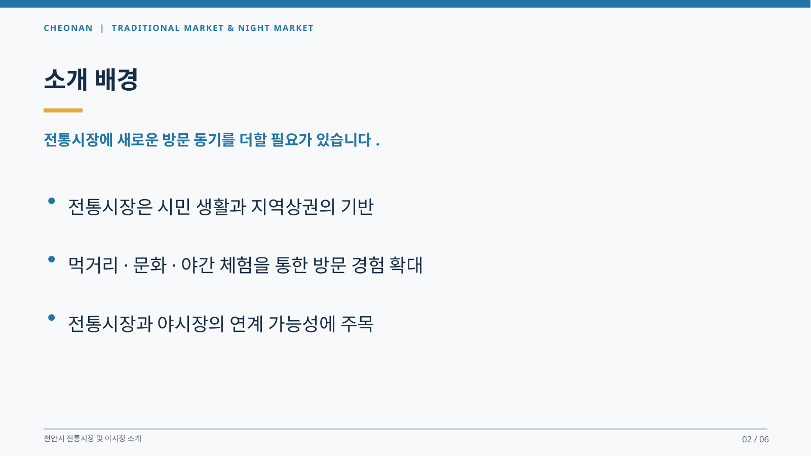
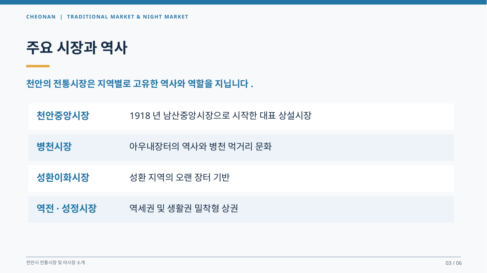
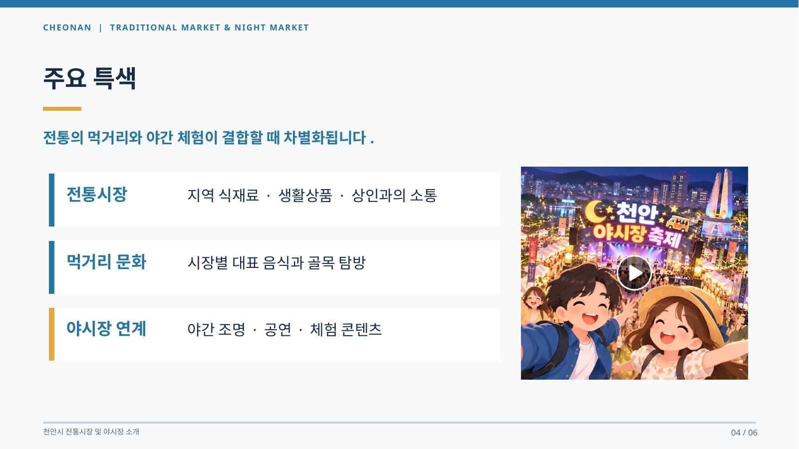
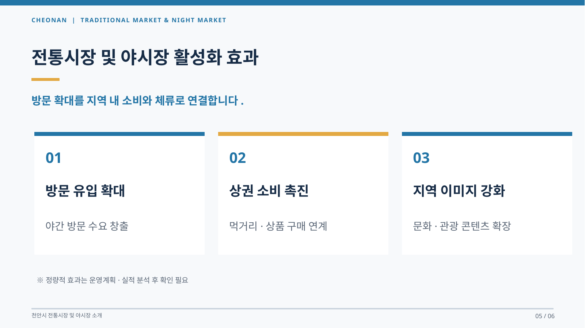

지역 식재료 · 생활상품 · 상인과의 소통
02 / 06 · CHEONAN
소개 배경
전통시장에 새로운 방문 동기를 더할 필요가 있습니다.
- 전통시장은 시민 생활과 지역상권의 기반
- 먹거리·문화·야간 체험을 통한 방문 경험 확대
- 전통시장과 야시장의 연계 가능성에 주목
전통시장에 새로운 방문 동기를 더할 필요가 있습니다.

천안의 전통시장은 지역별로 고유한 역사와 역할을 지닙니다.

전통의 먹거리와 야간 체험이 결합할 때 차별화됩니다.
지역 식재료 · 생활상품 · 상인과의 소통
시장별 대표 음식과 골목 탐방
야간 조명 · 공연 · 체험 콘텐츠

방문 확대를 지역 내 소비와 체류로 연결합니다.
야간 방문 수요 창출
먹거리·상품 구매 연계
문화·관광 콘텐츠 확장
※ 정량적 효과는 운영계획·실적 분석 후 확인 필요
